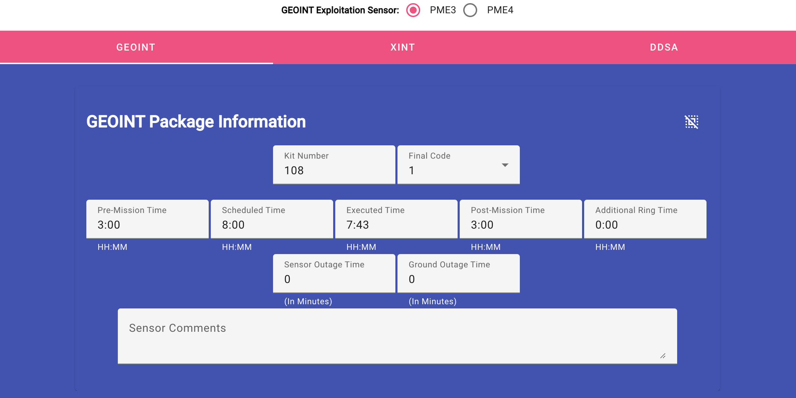
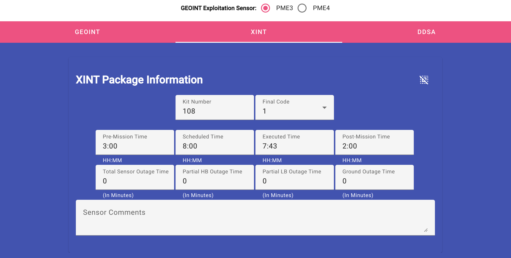
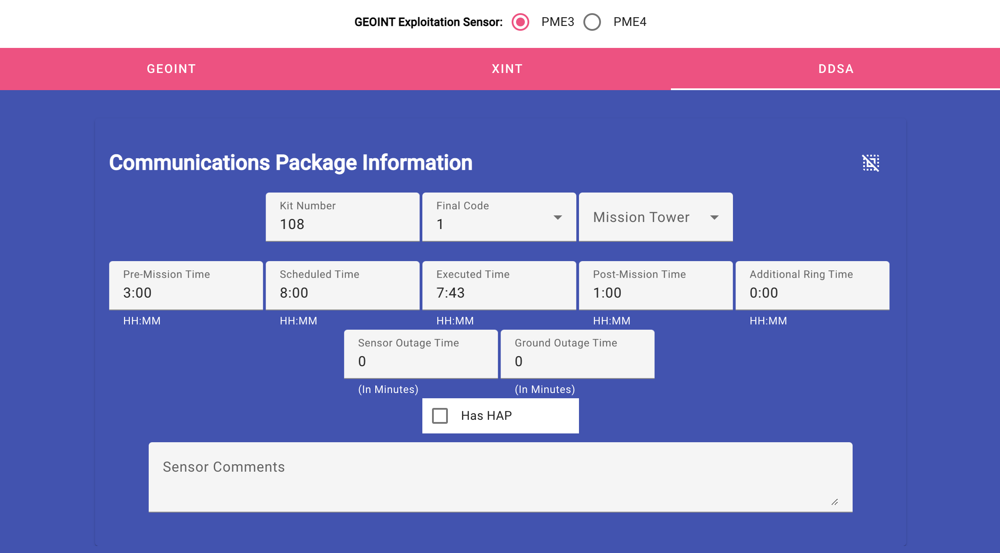

Reviewing the Missions(One Week)



I've separated the Mission Sensors from the mission because you won't see
all of them unless you are an administrator.
Take a good look at the three sensor type editors, because the various
fields are different. All the sensors have space for kit number, sensor
final status code, pre-mission, scheduled, executed/on-station and
post-mission times, sensor and ground equipment outage times and comments
specific to the sensor. The GEOINT and DDSA sensor views have times for
additional after-mission complete (post-mission ring). Only DDSA has a
checkbox for HAP and Tower identifier. Lastly, the other sensor has time spaces for partial
outages.
NOTE: All values are automatically
loaded into the database after it changes.
-
GEOINT Exploitation Sensor: This selects the GEOINT sensor on the aircraft.
Some aircraft have two possible values, so select the applicable one for
the mission.
- Kit Number: (Optional) The kit number is the serial identifier for the
aircraft sensor package.
This value to typed in and can include numbers and/or letters.
-
Final Code: (Optional) The sensor's final status code is a choice of 10
values (0 - 9) which is
provided by the maintainers to you, or your teammates. Choose the correct
final status code.
-
Mission Tower: (Optional) This selector field gives the editor a choice
of values (1-3) to represent the tower being used for the mission.
-
Pre-Mission, Scheduled, Executed, Post-Mission, Additional Ring Times:
(Required) These values are in hours:minutes format for the amount of time
in each stage of the mission. 7:15 value would indicated that stage took
7 hours and 15 minutes. Standard values for
Pre, Scheduled and Post will initially be provided.
- Pre-Mission Time: The time before launch where the sensor managers are
preparing for the mission.
-
Scheduled Time: The time that was scheduled by the planners from
launch-landing.
-
Executed Time: The amount of time, as determined, where the sensor
managers are monitoring/managing the sensor.
-
Post-Mission Time: The amount of time after landing until all sensor
managers action are complete.
-
Additional Ring Time: Occassionally, additional time is needed for
the sensor managers to complete the mission after execution time/
landing is complete.
-
Sensor, Total Sensor, Partial HB, Partial LB, and Ground Outage Times:
These times are for recording the amount of elapse time was needed to
return the mission for the various outage types. These times are in
minutes, but should never exceed the executed time. There is no verifier
to ensure this.
-
Total or Total Sensor Outage Time: These two values could be considered
synomymous. They are the number of minutes the entire sensor is off-line
and unable to complete the mission.
-
Partial LB or Partial HB Outage Time: These two values are available
to record the number of minutes the sensor is partially available for
the mission, with the part not working correctly annotated in minutes.
-
Ground Outage Time: The amount of time the ground equipment is not
available to complete the mission.
-
Has HAP Checkbox: No explanation given. Check is necessary.
-
Sensor Comments: (Optional) The field is provided to record any comments
needed to be recorded that are sensor, rather than mission, related.
General Mission
Review Mission Accomplishment